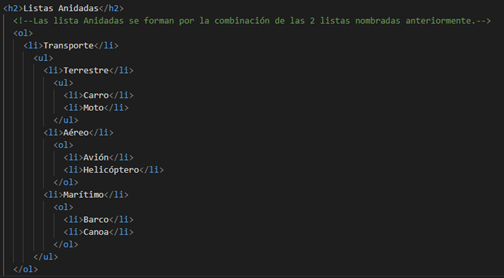

Las etiquetas unordered list (listas no ordenadas) son
útiles cuando necesitamos describir una lista sin orden numérico.
Por defecto estas listas traen un estilo que al
comienzo de cada ítem de la lista se les coloca un
círculo negro, esto de todas maneras podemos modificarlo
en nuestra hoja de estilos con una propiedad específica.
Para crear una lista no ordenada necesitamos abrir y
cerrar la etiqueta "ul", pero para declarar los
ítems que componen la lista debemos usar la
etiqueta "li" con su respectivo cierre par.
Las listas no organizadas son útiles para formar una barra de
navegación nav.
También es necesario mencionar que dentro de las listas en los
elementos "li" podemos volver a crear otra "ul"
o una "ol" con los elementos que necesitemos para nuestra
página web.
Ejemplo en la web
Llantas
Puertas
Motor
Asientos
Carrocería
Listas ordenadas
Las etiquetas ordened list nos son útiles para
crear listas con un orden numérico. Para la creación de
este tipo de lista debemos seguir los pasos como una lista "ul"
. Solo que a diferencia, en esta ocasión en vez de utilizar "ul"
vamos a declarar la etiqueta "ol" que es la que representa
la lista ordenada. Luego, por cada elemento de dicha lista
, si debemos aplicar la etiqueta "li".
Ejemplo en la web
Llantas
Puertas
Motor
Asientos
Carrocería
Listas Anidadas
Las listas anidadas son listas dentro de otras listas.
Utilizaremos como ejemplo los transportes (Aéreo, Terrestre y
Marítimo) cada uno de los términos está separado por
clasificaciones.
En el caso de los terrestres estarán los autos y las motos.
En el caso de los aéreos estarán los aviones y los helicópteros.
En el caso de los marítimos estarán los barcos y las canoas.
Construiremos una lista ordenada de transporte y una lista no
ordenada con las características: terrestre, aéreo y marítimo.
Dentro de aéreo construimos una lista ordenada al igual que en
marítimo y en terrestre la lista no será ordenada con las
variables carro y moto.
El código que vamos a construir debe quedarnos similar al que se
presenta en la siguiente imagen.

Transporte
Terrestre
Carro
Moto
Aéreo
Avión
Helicóptero
Marítimo
Barco
Canoa
Definiciones y Términos
Este tipo de lista asemeja a un diccionario utilizando las
etiquetas "dl" para determinar que es una lista de
definición y término, la etiqueta "dt" donde se
escribe el nombre de la definición y la etiqueta "dd"
que se encuentra el contenido de la definición.
Canopy
Tirolesa
Una tirolesa, tirolina, dosel, canopi, canopy, cable o zip line1 (según la región de Latinoamérica o el mundo), consiste en una polea suspendida por cables montados en un declive o inclinación. Están diseñados de modo que una o varias personas se impulsan por gravedad, y pueden deslizarse desde la parte superior hasta el fondo mediante un cable, usualmente de acero inoxidable. Es una práctica común en ejercicios militares, y también se le utiliza por campesinos de regiones montañosas escarpadas.
Type
Si utilizamos la propiedad type en la lista ordenada
tendremos la opción de cambiar el estilo de conteo de la lista
esta puede ser con números romanos en mayúscula o minúscula.